Kapital 8 Visualisering af trends

#load following packages
library(ggplot2)
library(tidyverse)
library(broom)
library(glue)
library(ggsignif)8.1 Indledning
I dette kapitel bygger vi videre på idéen om “nested data”: Vi opdeler et datasæt i grupper, samler hver gruppe i en liste-kolonne med functionen nest(), og bruger map()-funktioner til at køre den samme statistiske analyse på hver gruppe. Målet er at gøre analyserne reproducerbare og skalerbare.
Vi starter med korrelation (cor.test()) og går videre til lineær regression (lm()) og visualisering af trends med geom_smooth(). Undervejs bruger vi broom-pakken til at omforme model- og testoutput til tidy tibbles, så resultater nemt kan sammenlignes og plottes. Kapitlet afsluttes med multipel regression og model-sammenligning med anova(), samt et eksempel på at omsætte p-værdier til figur-annotationer.
Du skal være i stand til at
- Anvende
nest()til at samle deldatasæt i en liste-kolonne og derefter brugemaptil at gentage en bestemt analyse på tværs af flere deldatasæt uden at copy/paste koder. - Bruge funktionen
geom_smooth()til at visualisere lineær regression eller loess-kurver. - Omdanne output fra statistiske tests og modeller til tidy tibbles med
broom-pakken (fxglance()ogtidy()) - bruge anova() til at sammenligne indlejrede (nested) modeller, der er fit’et på samme datasæt.
- (valgfrit) tilføje modelstatistikker og signifikans-annotationer til figurer med
glue-pakken ogggsignif().
- Se videoerne
- Quizzen - visualisation of trends
- Lav problemstillingerne
8.1.1 Videoressourcer
OBS: Der er mange videoer til i dag, men de gentager samme proces fra sidste emner med group_by/nest og map mange gange (med forskellige statistiske metoder).
- Video 1: Korrelationskoefficient med
nest()ogmap()- Jeg gennemgår processen langsomt med en korrelationsanalyse
- Jeg introducerer
glancetil at lave outputtet fra statistiske metoder i pæn-format.
OBS: Jeg sagde “antal gener” flere gange i videoen, men variablen log10_size_mb er faktisk genomstørrelse i megabaser.
- Video 2: Lineær regression linjer med ggplot2
- Jeg viser hvordan man tilføjer regression linjer på et plot
- Jeg sammenligner linjen med resultatet fra
lm()
- Video 3: Lineær regression med
nest()ogmap()- Den process igen fra Video 1 men anvendte på lineær regression
- Video 4: Multiple linær regression model
- Den samme process men med flere modeller og flere uafhængige variabler
- Video 5: anova+map (OBS: muligvis mest udfordrende del i kurset)
- Benyt funktionen
anovafor at sammenligne to modeller, beregnet på datasættetpenguins, og få outputtet i “tidy”-format med funktionenbroom:::tidy() - Lav en funktion med
anova, der kan anvendes over alle arter medmap2() - Omsæt p-værdier fra sammenligningerne til et plot og tilføj signifikansannotationer
- Benyt funktionen
8.2 nest() og map(): eksempel med korrelation
Man laver en korrelationsanalyse i R ved at benytte cor.test() (cor() fungerer også, hvis du kun ønsker at beregne koefficienten og ikke signifikans). Forestil dig, at du gerne vil finde ud af korrelationen mellem GC-indhold (variablen gc, procent G/C baser i genomet) og genomstørrelse (variablen log10_size_mb) i datasættet eukaryotes fra sidste lektion.
I det følgende plotter jeg en density mellem gc og den transformerede variabel log10_size_mb, som er log10 genomstørrelse (ikke antal gener, som jeg sagde i videoen).
eukaryotes %>%
mutate(log10_size_mb = log10(size_mb)) %>%
select(log10_size_mb,gc) %>%
pivot_longer(everything()) %>%
ggplot(aes(x=value,fill=name)) +
geom_density(colour="black") +
facet_wrap(~name,scales="free") +
theme_bw()## Warning: Removed 388 rows containing
## non-finite outside the scale
## range (`stat_density()`).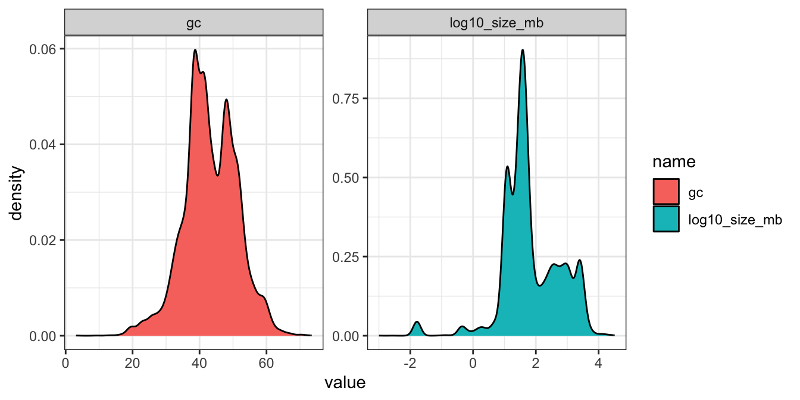
Plottet ser ud til at have flere “peaks”, og jeg mistænker, at der kan være nogle understrukturer indenfor dataene - eksempelvis på grund af de forskellige organismegrupper i variablen Group (Animals, Plants osv.). I det følgende benytter jeg alligevel cor.test() til at teste for korrelation mellem gc og log10_size_mb over hele datasættet:
##
## Pearson's product-moment correlation
##
## data: eukaryotes %>% pull(gc) and eukaryotes %>% pull(log10_size_mb)
## t = -15.678, df = 11118, p-value < 2.2e-16
## alternative hypothesis: true correlation is not equal to 0
## 95 percent confidence interval:
## -0.1652066 -0.1288369
## sample estimates:
## cor
## -0.1470715Outputtet fra cor.test (og mange andre metoder i R) er ikke særlig velegnet til at bruge indenfor en dataframe, så jeg introducerer en funktion, der hedder glance(), som findes i R-pakken broom. Funktionen glance() anvendes til at omdanne outputtet fra en statistisk test (f.eks. cor.test() eller lm()) til et tidy dataframe. Det gør det nemmere, for eksempel til at lave et plot, eller til at samle statistikker fra forskellige tests.
FALSE # A tibble: 1 × 8
FALSE estimate statistic p.value parameter conf.low conf.high method alternative
FALSE <dbl> <dbl> <dbl> <int> <dbl> <dbl> <chr> <chr>
FALSE 1 -0.147 -15.7 8.25e-55 11118 -0.165 -0.129 Pearson'… two.sidedMan kan se, at over hele datasættet, er der en signifikant negativ korrelation (estimate -0.147 og p-værdi 8.25054^{-55}) mellem de to variabler. Men jeg er imidlertid stadig mistænkelig over for eventuelle forskelle blandt de fem grupper fra variablen group.
Jeg vil gerne gentage den samme analyse for de fem grupper fra variablen group hver for sig. En god tilgang til at undersøge det er at bruge rammen med group_by() og nest(), som vi lærte sidst.
8.2.1 Korrelation over flere datasæt på en gang
Jeg tjekker først fordelingen af de to variabler opdelt efter variablen group:
eukaryotes %>%
select(log10_size_mb,gc,group) %>%
pivot_longer(-group) %>%
ggplot(aes(x=value,fill=group)) +
geom_density(colour="black",alpha=0.5) +
#geom_histogram(bins=40,alpha=0.5,colour="black") +
scale_fill_brewer(palette = "Set1") +
facet_wrap(~name,scales="free") +
theme_bw()## Warning: Removed 388 rows containing
## non-finite outside the scale
## range (`stat_density()`).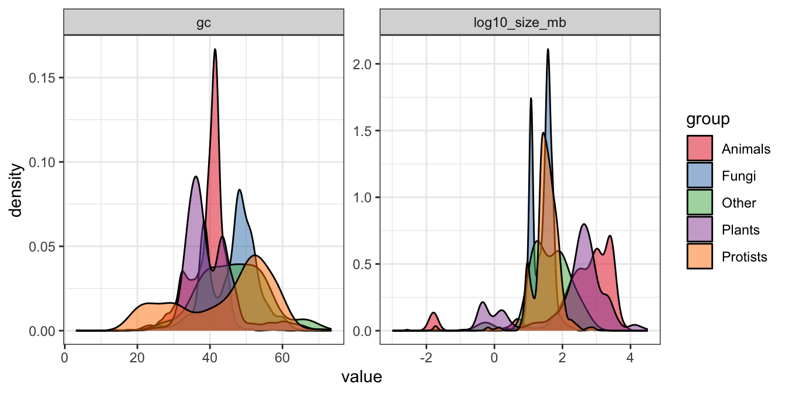
Man kan se, at der er forskelle blandt de fem grupper, og der kan sagtens forekomme forskellige sammenhænge mellem de to variabler. I det følgende benytter jeg rammen group_by() + nest(), som blev introduceret i sidste lektion.
Trin 1: Benyt group_by() + nest()
Jeg anvender group_by() på variablen group og derefter funktionen nest() for at opdele eukaryotes i fem forskellige datasæt (gemt i samme dataframe i en kolonne ved navn data):
## # A tibble: 5 × 2
## # Groups: group [5]
## group data
## <chr> <list>
## 1 Other <tibble [51 × 19]>
## 2 Protists <tibble [888 × 19]>
## 3 Plants <tibble [1,304 × 19]>
## 4 Fungi <tibble [6,064 × 19]>
## 5 Animals <tibble [3,201 × 19]>Trin 2: Definer korrelationsfunktion
Lad os definere korrelationstesten mellem gc og log10_size_mb i en funktion.
- Brug
~lige i starten for at fortælle R, at man arbejder med en funktion. - Specificer et bestemt datasæt (som er en delmængde af
eukaryotes) indenforcor.test()med.x - For det specifikke datasæt benytter jeg
.x %>% pull(gc)og.x %>% pull(size_mb)til at udtrække de relevante vektorer for at udføre testencor.test.
Vi vil gerne få statistikkerne fra cor.test() i en pæn form, så vi tilføjer glance() til den ovenstående funktion:
Trin 3: Brug map() på det nestede datasæt
Nu lad os køre vores funktion på det nestede dataframe. Vi bruger map() til at anvende funktionen my_cor_test på hvert af de fem datasæt. Det gøres ved at bruge funktionen map() indenfor funktionen mutate() til at oprette en ny kolonne, der hedder test_stats, hvor resultaterne fra hver af de fem tests gemmes.
## # A tibble: 5 × 3
## # Groups: group [5]
## group data test_stats
## <chr> <list> <list>
## 1 Other <tibble [51 × 19]> <tibble [1 × 8]>
## 2 Protists <tibble [888 × 19]> <tibble [1 × 8]>
## 3 Plants <tibble [1,304 × 19]> <tibble [1 × 8]>
## 4 Fungi <tibble [6,064 × 19]> <tibble [1 × 8]>
## 5 Animals <tibble [3,201 × 19]> <tibble [1 × 8]>Trin 4: Anvend unnest() for at kunne se resultaterne
For at kunne se statistikkerne bruger jeg funktionen unnest() på den nye variabel test_stats:
## # A tibble: 5 × 10
## # Groups: group [5]
## group data estimate statistic p.value parameter conf.low conf.high
## <chr> <list> <dbl> <dbl> <dbl> <int> <dbl> <dbl>
## 1 Other <tibble> 0.489 3.80 4.22e- 4 46 0.238 0.679
## 2 Protists <tibble> 0.301 9.26 1.54e- 19 860 0.239 0.361
## 3 Plants <tibble> -0.203 -7.37 3.10e- 13 1267 -0.255 -0.149
## 4 Fungi <tibble> 0.377 31.2 3.87e-198 5884 0.355 0.399
## 5 Animals <tibble> 0.0437 2.42 1.57e- 2 3053 0.00825 0.0790
## # ℹ 2 more variables: method <chr>, alternative <chr>Trin 5: Lav et plot fra statistikker
Vi kan bruge det direkte i et plot. Jeg fokuserer på korrelationskoefficienten i variablen estimate og omsætter den til et plot som følger:
cor_plot <- eukaryotes_cor %>%
ggplot(aes(x=group,y=estimate,fill=group)) +
geom_bar(stat="identity",colour="black") +
scale_fill_brewer(palette = "Set3") +
ylab("Correlation estimate") +
theme_classic()
cor_plot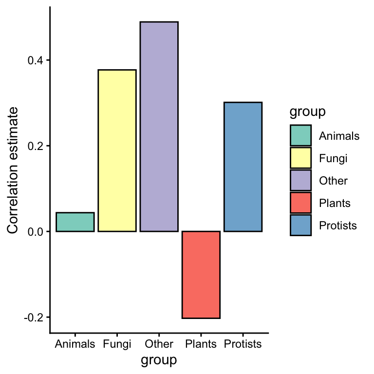
Bemærk at den overordnede proces her med cor.test ligner processen, hvis man anvender andre metoder såsom t.test, lm osv. Jeg gennemgår lidt om lineær regression og visualisering, og dernæst anvender processen på et eksempel med funktionen lm() og datasættet penguins.
8.3 Lineær regression - visualisering
8.3.1 Lineære trends
Vi skifter over til datasættet penguins, som findes i pakken palmerpenguins. Man kan se i det følgende scatterplot mellem bill_length_mm og body_mass_g, at der er plottet en bedste rette linje gennem punkterne, som viser, at der er en positiv sammenhæng mellem de to variabler.
## `geom_smooth()` using formula
## = 'y ~ x'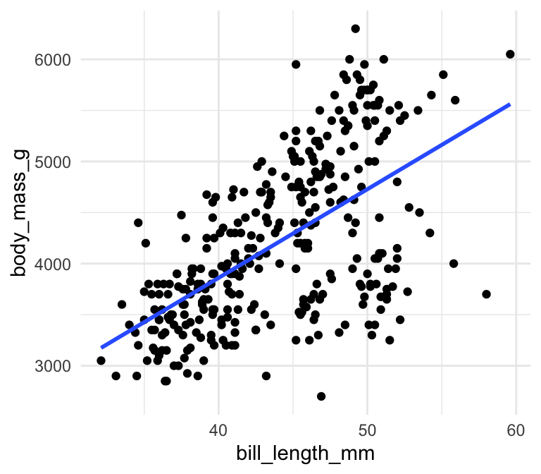
Husk, at den bedste rette linje har en formel \(y = a + bx\), hvor \(a\) er skæringspunktet, og \(b\) er hældningen af linjen. Ideen med simpel lineær regression er, at man gerne vil finde de bedste mulige værdier for \(a\) og \(b\) for at plotte ovenstående linje således, at afstanden mellem linjen og punkterne bliver minimeret. Uden at gå i detaljer om, hvordan det beregnes, kan man bruge funktionen lm() som følger:
##
## Call:
## lm(formula = body_mass_g ~ bill_length_mm, data = penguins)
##
## Coefficients:
## (Intercept) bill_length_mm
## 388.85 86.79Skæringspunktet er således 388.85 og hældningen er 86.79. Det betyder, at hvis variablen bill_length_mm stiger med 1, så ville den forventede body_mass_g stige med 86.79. Man kan således bruge linjen til at lave forudsigelser. For eksempel, hvis jeg målte en ny pingvin og fandt ud af, at den havde en bill_length_mm på 50 mm, kunne jeg bruge min linje til at gætte dens body_mass_g:
## (Intercept)
## 4728.433Jeg forventer derfor, at en pingvin med en næblængde på 50 mm vil have en vægt omkring 4728.4331411 g:
## `geom_smooth()` using formula
## = 'y ~ x'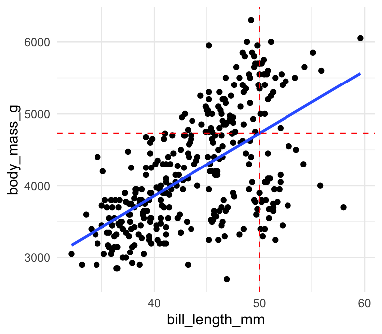
8.3.2 geom_smooth(): lm trendlinjer
Indbygget i ggplot2 er en funktion kaldet geom_smooth(), som kan bruges til at tilføje den bedste rette linje til plottet. Man benytter den ved at specificere + geom_smooth(method="lm") i plot-kommandoen:
ggplot(penguins,aes(x=bill_length_mm,y=body_mass_g)) +
geom_point() +
theme_minimal() +
geom_smooth(method="lm",se=FALSE)## `geom_smooth()` using formula
## = 'y ~ x'
Det er nemt at bruge, og man kan tilføje et konfidensinterval, hvis man ønsker det. I ovenstående plot specificerede jeg se=FALSE, men hvis jeg angav se=TRUE (som er standard), ville jeg få følgende plot:
ggplot(penguins,aes(x=bill_length_mm,y=body_mass_g)) +
geom_point() +
theme_minimal() +
geom_smooth(method="lm",se=TRUE)## `geom_smooth()` using formula
## = 'y ~ x'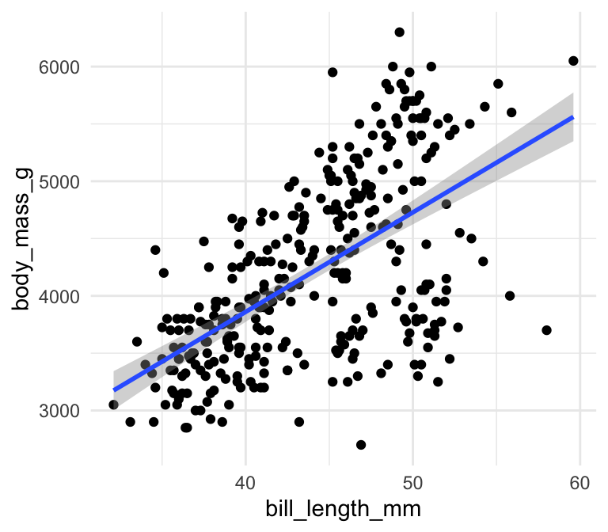
8.3.3 geom_smooth(): flere lm trendlinjer på samme plot
For at tilføje en bedste rette linje for hver af de tre species i stedet for alle dataene samlet, er det meget nemt i ggplot2: man angiver bare colour=species indenfor æstetik (aes):
ggplot(penguins,aes(x=bill_length_mm,y=body_mass_g,colour=species)) +
geom_point() +
theme_minimal() +
geom_smooth(method="lm",se=FALSE)## `geom_smooth()` using formula
## = 'y ~ x'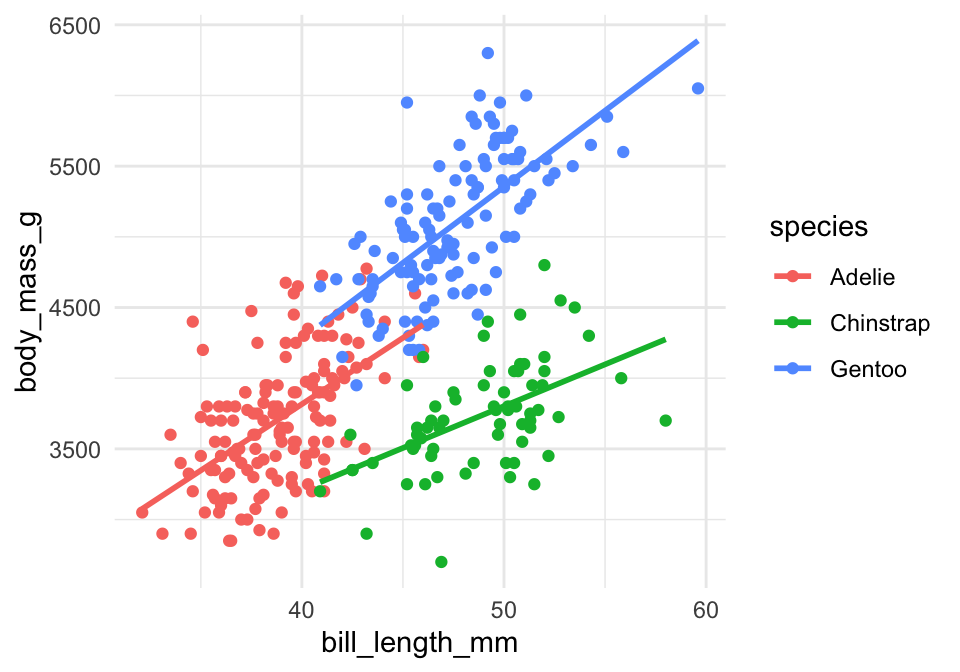
Så kan vi se, at der faktisk er tre forskellige trends her, så det giver god mening at bruge de tre forskellige linjer i stedet for kun én.
8.3.4 Trendlinjer med method=="loess"
I ggplot er vi ikke begrænset til method="lm" indenfor geom_smooth(). Lad os prøve med method="loess" i stedet:
library(palmerpenguins)
penguins <- drop_na(penguins)
ggplot(penguins,aes(x=bill_length_mm,y=body_mass_g,colour=species)) +
geom_point() +
theme_minimal() +
geom_smooth(method="loess",se=FALSE)## `geom_smooth()` using formula
## = 'y ~ x'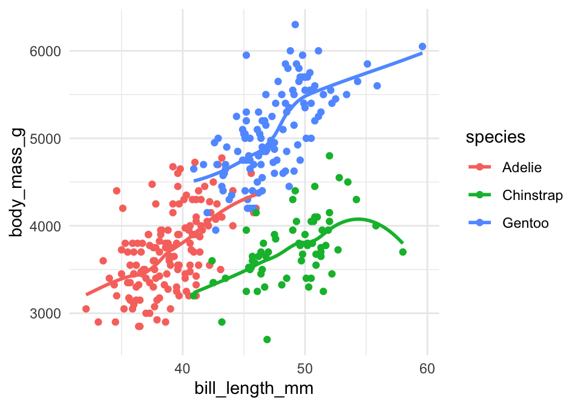
På denne måde kan man fange trends, som ikke nødvendigvis er lineære - men bemærk, at det er mere ligetil at beskrive og fortolke en lineær trend (og beregne forudsigelser ud fra en lineær trend).
8.4 Plot linear regression estimates
For at finde vores estimates og tjekke signifikansen af en lineær trend, arbejder vi direkte med den lineære model funktion lm():
##
## Call:
## lm(formula = body_mass_g ~ bill_length_mm, data = penguins)
##
## Residuals:
## Min 1Q Median 3Q Max
## -1759.38 -468.82 27.79 464.20 1641.00
##
## Coefficients:
## Estimate Std. Error t value Pr(>|t|)
## (Intercept) 388.845 289.817 1.342 0.181
## bill_length_mm 86.792 6.538 13.276 <2e-16 ***
## ---
## Signif. codes: 0 '***' 0.001 '**' 0.01 '*' 0.05 '.' 0.1 ' ' 1
##
## Residual standard error: 651.4 on 331 degrees of freedom
## Multiple R-squared: 0.3475, Adjusted R-squared: 0.3455
## F-statistic: 176.2 on 1 and 331 DF, p-value: < 2.2e-16Husk, at de tal, der er vigtige her (se også emne 1 og 2):
- p-værdien:
<2e-16- den uafhængige variabelbill_length_mmhar en signifikant effekt/betydning forbody_mass_g. - R-squared værdien: - den viser den andel af variancen i
body_mass_g, sombill_length_mmforklarer:- Hvis R-squared er tæt på 1, er der tæt på en perfekt korrespondance mellem
bill_length_mmogbody_mass_g. - Hvis R-squared er tæt på 0, er der nærmest ingen korrespondance.
- Hvis R-squared er tæt på 1, er der tæt på en perfekt korrespondance mellem
8.4.1 Anvendelse af lm() over nestede datasæt
Vi kan benytte den samme proces som ovenpå i korrelationsanalysen. Vi bruger group_by til at opdele efter de tre species og så “nester” vi de tre datarammer:
## # A tibble: 3 × 2
## # Groups: species [3]
## species data
## <fct> <list>
## 1 Adelie <tibble [146 × 7]>
## 2 Gentoo <tibble [119 × 7]>
## 3 Chinstrap <tibble [68 × 7]>Jeg definerer en funktion, hvor man kan lave lineær regression og tilføjer glance() for at få modelstatistikkerne i en pæn form.
#husk ~ og skriv .x for data og IKKE penguins
lm_model_func <- ~lm(body_mass_g~bill_length_mm,data=.x) %>% glance()Vi kører en lineær model på hver af de tre datasæt med map() og ved at specificere funktionen lm_model_func, som vi definerede ovenfor. Vi bruger mutate() ligesom før til at tilføje statistikkerne som en ny kolonne kaldet lm_stats:
## # A tibble: 3 × 3
## # Groups: species [3]
## species data lm_stats
## <fct> <list> <list>
## 1 Adelie <tibble [146 × 7]> <tibble [1 × 12]>
## 2 Gentoo <tibble [119 × 7]> <tibble [1 × 12]>
## 3 Chinstrap <tibble [68 × 7]> <tibble [1 × 12]>Til sidst bruger vi funktionen unnest() på vores statistikker:
## # A tibble: 3 × 14
## # Groups: species [3]
## species data r.squared adj.r.squared sigma statistic p.value df logLik
## <fct> <list> <dbl> <dbl> <dbl> <dbl> <dbl> <dbl> <dbl>
## 1 Adelie <tibble> 0.296 0.291 386. 60.6 1.24e-12 1 -1076.
## 2 Gentoo <tibble> 0.445 0.440 375. 93.6 1.26e-16 1 -873.
## 3 Chinst… <tibble> 0.264 0.253 332. 23.7 7.48e- 6 1 -490.
## # ℹ 5 more variables: AIC <dbl>, BIC <dbl>, deviance <dbl>, df.residual <int>,
## # nobs <int>Nu kan vi se, at vi har fået en dataramme med vores lineære modelstatistikker. Jeg tager r.squared og p.value og omsætter dem til et plot for at sammenligne dem over de tre species af pingviner.
penguins_lm %>%
select(species,r.squared,p.value) %>%
mutate("-log10pval" = -log10(p.value)) %>%
select(-p.value) %>%
pivot_longer(-species) %>%
ggplot(aes(x=species,y=value,fill=species)) +
geom_bar(stat="identity") +
scale_fill_brewer(palette = "Set2") +
facet_wrap(~name,scale="free",ncol=4) +
coord_flip() +
theme_bw()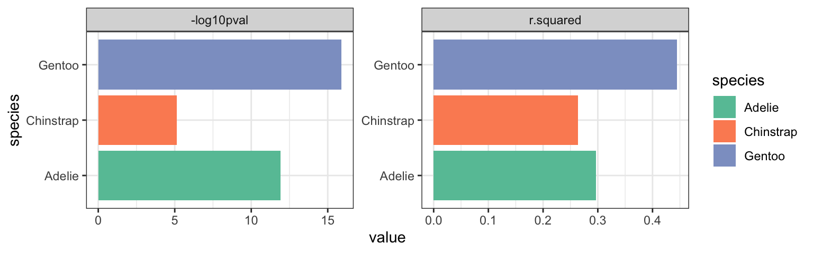
8.4.2 Funktionen glue() til at tilføje etiketter
Det kan være nyttigt at tilføje etiketter til vores plots, der indeholder de statistikker, vi netop har beregnet. For at gøre dette kan vi benytte følgende kode. Vi tager vores datasæt penguins_lm med vores beregnede statistikker og bruger det til at lave et datasæt, som kan benyttes i geom_text() i vores trend plot. Funktionen glue() (fra pakken glue) er en praktisk måde at sammensætte r.squared og p.value værdierne i en streng, der beskriver vores forskellige trends (lidt ligesom paste i base-R).
library(glue) # til at sammensætte værdierne i en etiket
label_data <- penguins_lm %>%
mutate(
rsqr = signif(r.squared, 2), # afrunder til 2 signifikante cifre
pval = signif(p.value, 2),
label = glue("r^2 = {rsqr}, p-værdi = {pval}")
) %>%
select(species, label)
label_dataFALSE # A tibble: 3 × 2
FALSE # Groups: species [3]
FALSE species label
FALSE <fct> <glue>
FALSE 1 Adelie r^2 = 0.3, p-værdi = 1.2e-12
FALSE 2 Gentoo r^2 = 0.44, p-værdi = 1.3e-16
FALSE 3 Chinstrap r^2 = 0.26, p-værdi = 7.5e-06Vi kan tilføje vores etiketdata ved hjælp af geom_text(). x og y specificerer, hvor på plottet teksten skal placeres, og husk at angive data=label_data og label=label indenfor aes(), når det drejer sig om en variabel i label_data.
ggplot(penguins, aes(body_mass_g, flipper_length_mm, colour=species)) +
geom_point() +
geom_smooth(method = "lm", se = FALSE) +
geom_text(
x = 5500,
y = c(175,180,185),
data = label_data, aes(label = label), #specificerer etiketdata fra ovenstående
size = 4
) +
scale_color_brewer(palette = "Set2") +
theme_minimal() ## `geom_smooth()` using formula
## = 'y ~ x'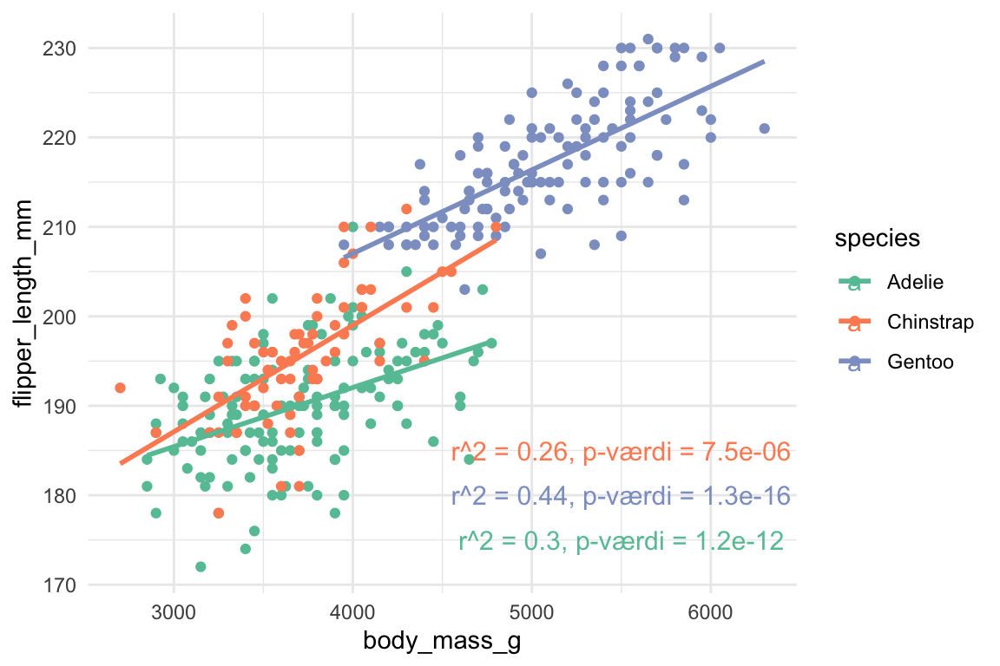
8.5 Multipel regression og model sammenligning
Vi kan også benytte samme ramme som ovenfor til at sammenligne forskellige modeller på tværs af de samme tre datasæt. Her definerer jeg lm_model_func, som kun har sex som den uafhængige variabel, og jeg bygger videre på denne model ved at definere lm_model_func2 og lm_model_func3, hvor jeg tilføjer ekstra uafhængige variabler, bill_length_mm og flipper_length_mm. Jeg er interesseret i, hvor meget af variansen i body_mass_g, de tre variabler kan forklare tilsammen, og om der er forskelle mellem de tre arter i species.
lm_model_func <- ~lm(body_mass_g ~ sex ,data=.x)
lm_model_func2 <- ~lm(body_mass_g ~ sex + bill_length_mm ,data=.x)
lm_model_func3 <- ~lm(body_mass_g ~ sex + bill_length_mm + flipper_length_mm ,data=.x)Bemærk, at jeg endnu ikke har tilføjet glance() her, men jeg har planer om at gøre det lidt senere i processen for at undgå at få for mange statistikker i min dataframe med mine resultater. Jeg anvender først group_by() efter species og derefter nest():
## # A tibble: 3 × 2
## # Groups: species [3]
## species data
## <fct> <list>
## 1 Adelie <tibble [146 × 7]>
## 2 Gentoo <tibble [119 × 7]>
## 3 Chinstrap <tibble [68 × 7]>Her bruger jeg map tre gange indenfor den samme mutate-funktion for at konstruere de tre modeller for hver art (ni modeller i alt).
penguins_nest_lm <- penguins_nest %>%
mutate(
model_sex = map(data,lm_model_func),
model_sex_bill = map(data,lm_model_func2),
model_sex_bill_flipper = map(data,lm_model_func3))
penguins_nest_lm## # A tibble: 3 × 5
## # Groups: species [3]
## species data model_sex model_sex_bill model_sex_bill_flipper
## <fct> <list> <list> <list> <list>
## 1 Adelie <tibble [146 × 7]> <lm> <lm> <lm>
## 2 Gentoo <tibble [119 × 7]> <lm> <lm> <lm>
## 3 Chinstrap <tibble [68 × 7]> <lm> <lm> <lm>Nu vil jeg gerne trække nogle statistikker fra modellerne, så jeg kan sammenligne dem. Jeg vil gerne udføre samme proces på alle ni modeller - hvor jeg benytter funktionen glance til at få outputtet i en tidy-form, og så trække r.squared ud bagefter for at undgå at få for mange statistikker i min nye dataframe.
Nu gælder det om at køre ovenstående funktion på alle mine modeller, som er gemt i tre kolonner, model_sex,model_sex_bill og model_sex_bill_flipper. Jeg gør dette indenfor map, så det også bliver udført for hver af de tre arter.
penguins_nest_lm <- penguins_nest_lm %>%
mutate(model_sex_r2 = map_dbl(model_sex, get_r2_func),
model_sex_bill_r2 = map_dbl(model_sex_bill, get_r2_func),
model_sex_bill_flipper_r2 = map_dbl(model_sex_bill_flipper, get_r2_func))
penguins_nest_lm %>% select(species,model_sex_r2,model_sex_bill_r2,model_sex_bill_flipper_r2)## # A tibble: 3 × 4
## # Groups: species [3]
## species model_sex_r2 model_sex_bill_r2 model_sex_bill_flipper_r2
## <fct> <dbl> <dbl> <dbl>
## 1 Adelie 0.545 0.563 0.602
## 2 Gentoo 0.649 0.691 0.716
## 3 Chinstrap 0.291 0.331 0.476Omdann til et plot:
penguins_nest_lm %>%
pivot_longer(cols=c("model_sex_r2","model_sex_bill_r2","model_sex_bill_flipper_r2")) %>%
ggplot(aes(x=species,y=value,fill=name)) +
geom_bar(stat="identity",position="dodge") +
theme_minimal()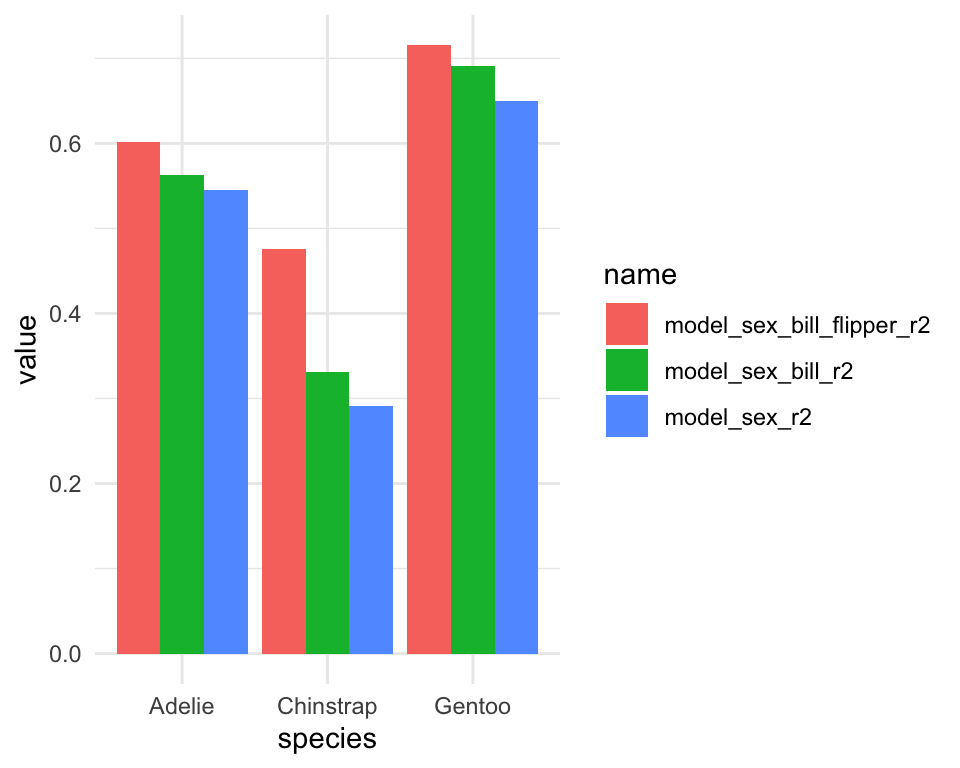
Man kan se i plottet, at body_mass_g for arten “Gentoo” bedst forklares af de tre variabler, og den laveste r.squared er i det tilfælde, hvor variablen sex er den eneste uafhængige variabel og species er “Chinstrap”.
8.5.1 anova til at sammenligne de forskellige modeller
Årsagen til, at jeg valgte at bruge glance() i en ny funktion til at udtrække r.squared værdier, var fordi jeg gerne ville bevare mine modeller i deres oprindelige form, så de kunne bruges indenfor anova(). Med anova() kan jeg direkte sammenligne to modeller og dermed få en p-værdi, der tester hypotesen om, at den ekstra variabel i den ene model signifikant forklarer den afhængige variabel (når man tager højde for de variabler, der er fælles for begge modeller).
I det følgende skriver jeg en funktion, hvor jeg kan sammenligne to modeller med anova og udtrække p-værdien:
- ~ fordi det er en funktion (som jeg benytter for hver art og model sammenligning - i alt 9 gange!)
anovafor at sammenligne modellerne, der er angivet ved.xog.y(vi brugermap2, der tager to input i stedet for én, som imap)tidy()fungerer ligesom glance, men giver oversigt over statistikker og flere linjer - herunder p-værdienpluck- jeg vil kun have én statistik (“p.value”) - og den er gemt på anden position.
Se følgende kode for anvendelse af anova og tidy på modellerne model_sex og model_sex_bill i arten “Adelie” (da jeg har brugt pluck med “1”, hvilket betyder den første position i listen):
myaov <- anova(penguins_nest_lm %>% pluck("model_sex",1),
penguins_nest_lm %>% pluck("model_sex_bill",1))
myaov %>% tidy() #p.value for comparing the two models is in the second position## # A tibble: 2 × 7
## term df.residual rss df sumsq statistic p.value
## <chr> <dbl> <dbl> <dbl> <dbl> <dbl> <dbl>
## 1 body_mass_g ~ sex 144 1.39e7 NA NA NA NA
## 2 body_mass_g ~ sex + bill_l… 143 1.33e7 1 551805. 5.92 0.0162Man kan se, at p-værdien er 0.016, som er signifikant, og det betyder, at den mere komplekse model, der også inddrager bill_length_mm, er den model, vi accepterer (dvs. effekten af variablen bill_length_mm på body_mass_g er signifikant i vores endelige model).
Man kan lave en lignende sammenligning mellem samtlige par af modeller for de tre arter:
penguins_nest_lm <- penguins_nest_lm %>%
mutate(model_sex_vs_model_sex_bill = map2_dbl(model_sex,model_sex_bill,aov_func),
model_sex_vs_model_sex_bill_flipper = map2_dbl(model_sex,model_sex_bill_flipper,aov_func),
model_sex_bill_vs_model_sex_bill_flipper = map2_dbl(model_sex_bill,model_sex_bill_flipper,aov_func))
penguins_nest_lm %>% select(species,model_sex_vs_model_sex_bill,model_sex_vs_model_sex_bill_flipper,model_sex_bill_vs_model_sex_bill_flipper)## # A tibble: 3 × 4
## # Groups: species [3]
## species model_sex_vs_model_s…¹ model_sex_vs_model_s…² model_sex_bill_vs_mo…³
## <fct> <dbl> <dbl> <dbl>
## 1 Adelie 0.0162 0.0000730 0.000273
## 2 Gentoo 0.000142 0.00000592 0.00193
## 3 Chinstrap 0.0540 0.0000621 0.0000795
## # ℹ abbreviated names: ¹model_sex_vs_model_sex_bill,
## # ²model_sex_vs_model_sex_bill_flipper,
## # ³model_sex_bill_vs_model_sex_bill_flipperDet kunne være nyttigt at inddrage p-værdierne i ovenstående plot med r.squared værdierne, for at se om der er en signifikant effekt, når man tilføjer flere variabler til modellen, samtidig med at r.squared stiger. I det følgende omsætter jeg r.squared statistikkerne for kun “Chinstrap” til et plot:
library(ggsignif)
stats_plot <- penguins_nest_lm %>%
filter(species=="Chinstrap") %>%
pivot_longer(cols=c("model_sex_r2","model_sex_bill_r2","model_sex_bill_flipper_r2")) %>%
ggplot(aes(x=name,y=value,fill=name)) +
geom_bar(stat="identity",position="dodge") +
coord_flip() +
theme_bw()
stats_plot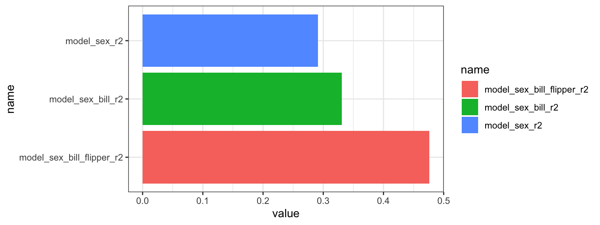
I det følgende tilføjer jeg funktionen geom_signif til plottet - den tillader mig at tilføje signifikanslinjer/annotationer til plottet - det vil sige, den viser, hvilke to modeller jeg sammenligner, og angiver stjerner i henhold til de beregnede p-værdier. Du er velkommen til at kopiere min kode og tilpasse den til dine egne behov.
- Når jeg sammenligner modellerne “model_sex” og “model_sex_bill” for “Chinstrap”, er p-værdien over 0.05, så tilføjelsen af
bill_length_mmi modellen var ikke signifikant - jeg tilføjer ingen stjerner men skriver “.” for at matche outputtet ilm. - Når jeg sammenligner modellerne “model_sex” og “model_sex_bill_flipper”, kan jeg se, at p-værdien er under 0.05, så der er en signifikant effekt -
bill_length_mmogflipper_length_mmforklarer den afhængige variabelbody_mass_g, udover variablensex. Jeg angiver “***“, fordi p-værdien er under 0.001 (se signifikanskoder ilmsummary). - Indstillingen
y_positionangiver, hvor jeg vil placere linjerne.
stats_plot +
geom_signif(comparisons = list(c("model_sex_r2", "model_sex_bill_r2")),
annotations=".", y_position = 0.35, tip_length = 0.03) +
geom_signif(comparisons = list(c("model_sex_bill_r2", "model_sex_bill_flipper_r2")),
annotations="***", y_position = 0.5, tip_length = 0.03) +
geom_signif(comparisons = list(c("model_sex_r2", "model_sex_bill_flipper_r2")),
annotations="***", y_position = 0.55, tip_length = 0.03)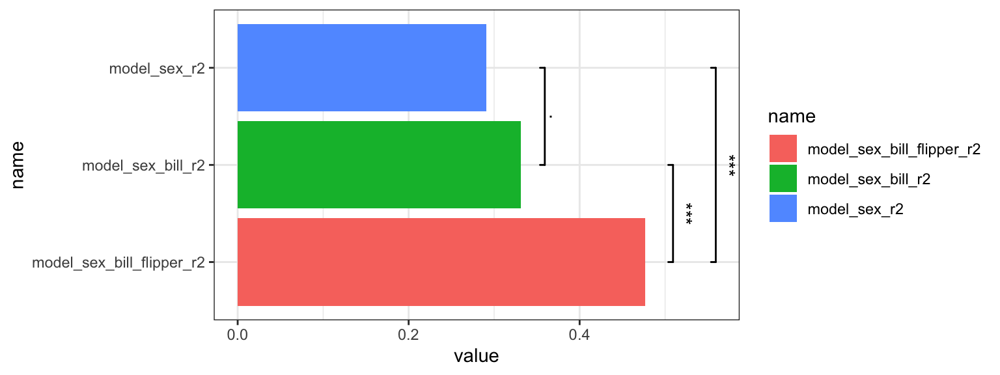
8.6 Resource
Input til .x i map(.x, .f) |
Hvad .x er inde i funktionen |
Output fra map() |
Eksempel |
|---|---|---|---|
| Atomisk vektor (numeric/character/logical) | Ét enkelt element fra vektoren | Liste med samme længde som input | map(1:3, ~ .x^2) |
| Liste | Ét liste-element (kan være vektor, df, model, osv.) | Liste med samme længde som input | map(list(1:2, 10:12), mean) |
| Data frame / tibble | Én kolonne ad gangen (data frames er lister af kolonner/variable) | Liste med én entry pr. kolonne | map(mtcars, mean) |
| Liste af data frames | Ét data frame ad gangen | Liste med samme længde som input-listen | map(list(mtcars[1:3,], mtcars[4:6,]), nrow) |
Nested tibble med en liste-kolonne fra nest() (fx kolonnen data) |
Ét gruppe-opdelt data frame ad gangen (ét element i liste-kolonnen) | Liste-kolonne med én entry pr. gruppe | nested %>% mutate(n = map(data, nrow)) |
OBS i denne Kapital beskæftiger vi os meget med den sidste linje i tabellen (Nested tibble med en liste-kolonne)
8.7 Problemstillinger
Problem 1) Quizzen på Absalon.
Husk at have indlæste følgende:
Problem 2) Grundlæggende korrelationsøvelse
Brug
data(mtcars)ogcor.test()til at udføre en test af korrelationen mellem variablerneqsecogdrat(OBS: udengroup_by()ognest()her).Tip: Hvis du foretrækker at undgå brugen af
$til at specificere en kolonne indenforcor.test(), kan du brugemtcars %>% pull(qsec)i stedet formtcars$qsec.Tilføj funktionen
glance()til dit resultat fracor.test()for at se statistikkerne i tidy form (installer pakkenbroomhvis det er nødvendigt). Kan du genkende statistikkerne fracor.test()i den resulterende dataramme?
Problem 3) Nesting øvelse
For datasættet msleep, anvend group_by() og nest() for at skabe en nested dataframe, hvor datasættet er opdelt efter variablen vore. Kald det for msleep_nest.
- Tilføj en ny kolonne til
msleep_nestmedmutate, der heddern_rowsog viser antallet af rækker i hvert af de fire datasæt - husk følgende struktur:
- I dette tilfælde kan du ændre
maptilmap_dbl- gør det.
Problem 4) Multiple korrelation
Vi vil gerne beregne korrelationen mellem variablerne sleep_total og sleep_rem for hvert af de fire datasæt lagret i msleep_nest.
- Tilpas følgende funktion, så vi kan teste korrelationen mellem de to variabler.
- Tilføj
glance()for at få vores data i tidy form.
Brug
map()indenformutate()med din funktion for at beregne korrelationsstatistikkerne for hvert af de fire datasæt.Unnest din nye kolonne bagefter med
unnest()-funktionen.Lav barplots af
estimateog-log10(p.value)med den resulterende dataramme.Prøv også at tilføje
%>% pluck("estimate",1)til dincor_testfunktion og se på resultatet.
Problem 5) Lineær regressionsøvelse
Åbn LungCapData (inklusiv Age.Groups):
LungCapData <- read.csv("https://www.dropbox.com/s/ke27fs5d37ks1hm/LungCapData.csv?dl=1")
glimpse(LungCapData) #se variabelnavne## Rows: 725
## Columns: 6
## $ LungCap <dbl> 6.475, 10.125, 9.550, 11.125, 4.800, 6.225, 4.950, 7.325, 8.…
## $ Age <int> 6, 18, 16, 14, 5, 11, 8, 11, 15, 11, 19, 17, 12, 10, 10, 13,…
## $ Height <dbl> 62.1, 74.7, 69.7, 71.0, 56.9, 58.7, 63.3, 70.4, 70.5, 59.2, …
## $ Smoke <chr> "no", "yes", "no", "no", "no", "no", "no", "no", "no", "no",…
## $ Gender <chr> "male", "female", "female", "male", "male", "female", "male"…
## $ Caesarean <chr> "no", "no", "yes", "no", "no", "no", "yes", "no", "no", "no"…Anvend
lm()medLungCapsom den afhængige variabel ogAgesom den uafhængige variabel.Hvad er skæringspunktet og hældningen af den beregnede linje?
Prøv at tilføje funktionen
glance()til dinlmfunktion og angiv værdierne forr.squaredogp.value.
Problem 6) Lav et scatterplot med Age på x-aksen og LungCap på y-aksen.
- Ændre linjen til
geom_smooth(method="lm") - Ændre linjen til
geom_smooth(method="lm",se=FALSE) - Specificer nu en forskellig farve baseret på
Gender. Hvordan adskiller de to linjer sig? - Specificer nu en forskellig farve baseret på
Smoke. Hvordan adskiller de to linjer sig?
Problem 7) Øvelse i lineær regression på flere datasæt
Vi vil gerne udføre lineær regression med LungCap og Age, men opdelt efter variablen Smoke. BEMÆRK: Vi følger den samme proces som i kursusnoterne, men med LungCapData i stedet for Penguins - se gerne kursusnoterne for inspiration.
a) Brug group_by() og nest() for at opdele dit datasæt efter Smoke
b) Lav en funktion, lm_model_func, som beregner en lineær regression med LungCap som den afhængige variabel og Age som den uafhængige variabel. Tilføj glance() til lm_model_func.
c) Brug map() med din funktion inden i mutate() for at tilføje en ny kolonne kaldet lm_stats til din dataframe. Husk at unnest kolonnen lm_stats for at kunne se statistikkerne.
d) Fortolkning - er variablen LungCap bedre forklaret af variablen Age hos rygere eller ikke-rygere?
Problem 8)
Her er tre modeller, alle med LungCap som den afhængige variabel, og alle tager højde for Age:
my_lm_func1 <- ~lm(LungCap ~ Age ,data=.x)
my_lm_func2 <- ~lm(LungCap ~ Age + Gender ,data=.x)
my_lm_func3 <- ~lm(LungCap ~ Age + Gender + Height,data=.x)a) Brug map til at lave tre nye kolonner i LungCapData_nest, én til hver af de tre modeller (uden glance() her, så vi kan bruge vores lm objekter senere).
b) Skriv en funktion my_r2_func, der udtrækker “r.squared” værdierne fra dine modeller (her refererer .x i funktionen ikke til en dataframe, men til en beregnet model - hvad skal tilføjes?). Lav tre yderligere kolonner i LungCapData_nest, hvor du kører din funktion på dine modeller med map (outputtet skal være dbl).
LungCapData_nest <- LungCapData_nest %>%
mutate("Age_only_R2" = ...,
"Age_Gender_R2" = ...,
"Age_Gender_Height_R2"= ...)c) Omsæt dine beregnede r.squared værdier til et plot
Problem 9
a) Skriv en funktion hvor man anvende anova() til at sammenligne to modeller, .x og .y og dernæst udtrækker p-værdien (det er den samme funktion som i kursusnotaterne).
b) Anvend din funktion med map2 til at sammenligne de tre modeller fra sidste spørgsmål.
c) Lav et plot med dine resultater.
d) Tilføj signifikans annotations på plottet med funktionen geom_signif() (tilpas gerne kode fra kursusnotaterne).